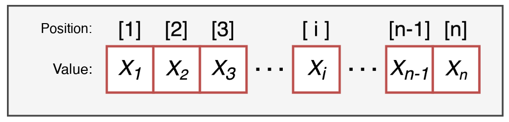

Objects, operators and vectors
The folder where R reads and saves files, unless we tell it otherwise
The best solution: an R Project (File > New Project...)
Open the project by double-clicking the .Rproj file: RStudio starts in the right folder
We create an object with the assignment arrow <-: name <- value
x1 yes, 1x noName and name are two different objects[1] "numeric"[1] "integer"[1] "character"[1] "logical"| operator | what it does | example | result |
|---|---|---|---|
+ - |
addition, subtraction | 5 + 2 - 1 |
6 |
* / |
multiplication, division | 6 * 2 / 4 |
3 |
^ |
power | 2 ^ 3 |
8 |
%% |
remainder of the division | 9 %% 2 |
1 |
R follows the order of operations of mathematics: use parentheses when in doubt
They compare two values and return TRUE or FALSE
| operator | meaning | example | result |
|---|---|---|---|
== != |
equal, different | 5 == 5 |
TRUE |
> >= |
greater (or equal) | 5 > 7 |
FALSE |
< <= |
less (or equal) | 5 <= 5 |
TRUE |
%in% |
is it contained in…? | 2 %in% c(1, 2, 3) |
TRUE |
Remember: = (or <-) assigns, == compares!
They combine several conditions
[1] TRUE[1] FALSE[1] FALSEIn calculations, TRUE counts as 1 and FALSE as 0
[1] 2[1] 3[1] 0.75A one-dimensional sequence of elements, all of the same type. Each element has a value and a position.

If we mix types, R converts everything to one type (usually character):
is. and as.is. tests the type, as. converts it (when possible)
[1] TRUE[1] FALSE[1] "1" "0" "3"[1] TRUE FALSE TRUEOperations are applied element by element:
[1] 53.6 64.4 77.0 87.8 44.6[1] FALSE FALSE TRUE TRUE FALSENA[1] NA[1] 23.33333Square brackets vector[position] select elements:
A negative position excludes that element:
If the elements have names, we can select them by name:
A logical condition inside the brackets keeps the elements where it is TRUE:
Mon Tue Wed Thu Fri
FALSE FALSE TRUE TRUE FALSE Wed Thu
25 31 Mon Tue Wed
12 18 25 Selecting elements and assigning a new value modifies only those elements:
[1] 20 NA 30 22 NA| to… | use |
|---|---|
| know / change the wd | getwd() / setwd(), or an R Project |
| create an object | name <- value |
| compare / combine conditions | == != > < %in% / & | ! |
| create a vector | c(), :, seq(), rep() |
| test / convert a type | is.numeric(), as.character(), … |
| deal with missing values | is.na(), na.rm = TRUE |
| select elements | x[2], x[-2], x["name"], x[x > 5], which() |
| modify elements | x[condition] <- new_value |
Open this link and keep it open: